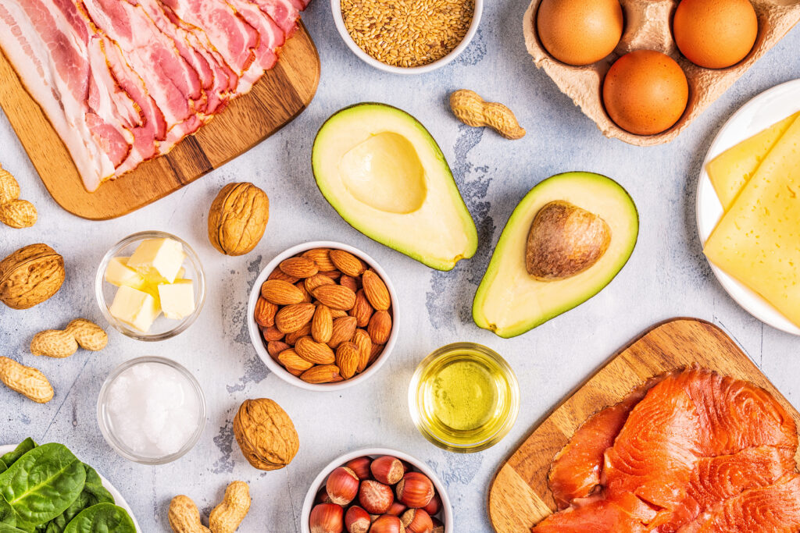
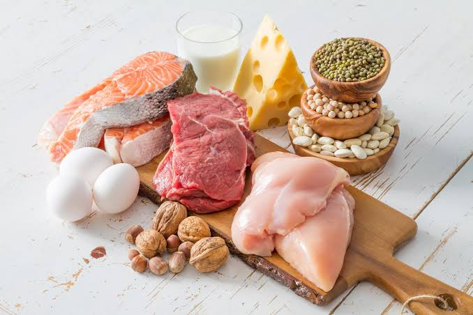

Carboidratos
Conheça moléculas importantes para o fornecimento de energia e presentes em diversos alimentos.
Saiba maisProjeto Integrador - 3º Informática Matutino
As macromoléculas são moléculas grandes e complexas que desempenham funções essenciais nos seres vivos e também estão presentes em diversos materiais utilizados no cotidiano. Conhecer suas características ajuda a compreender melhor os processos biológicos e químicos que acontecem ao nosso redor.
Neste site, você encontrará informações sobre diferentes grupos de substâncias, suas estruturas, funções, exemplos e aplicações na ciência e no dia a dia.
Conheça moléculas importantes para o fornecimento de energia e presentes em diversos alimentos.
Saiba mais
Descubra as funções das gorduras, dos óleos e de outros lipídios nos organismos.
Saiba mais
Entenda como o DNA e o RNA armazenam e transmitem informações genéticas.
Saiba maisAprenda como essas grandes moléculas são formadas e conheça suas aplicações no cotidiano.
Saiba mais
Conheça moléculas formadas por aminoácidos que desempenham funções essenciais nos seres vivos.
Saiba maisDepois de explorar os conteúdos, responda ao quiz e descubra o que você aprendeu sobre macromoléculas.
Acessar o Quiz